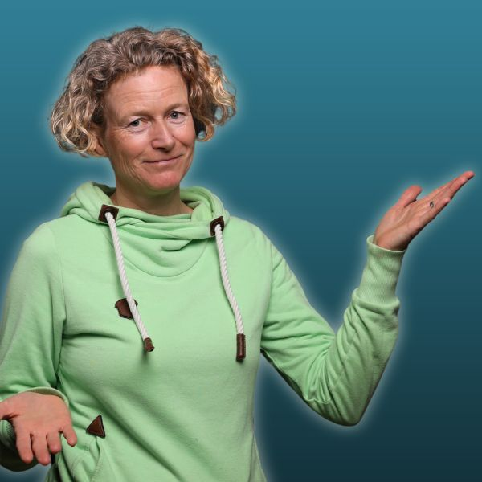

<!DOCTYPE html>
<html lang="de">
<head>
  <meta charset="UTF-8">
  <meta name="viewport" content="width=device-width, initial-scale=1.0">
  <title>Claude Cowork Deep Dive - Selbstlernkurs · Marit Alke</title>
  <link href="https://fonts.googleapis.com/css2?family=Open+Sans:wght@400;600;700&display=swap" rel="stylesheet">
  <style>
    @font-face { font-family:'PT Sans'; font-style:normal; font-weight:400; font-display:swap; src:url('fonts/subset-PTSans-Regular.woff2') format('woff2'); }
    @font-face { font-family:'PT Sans'; font-style:italic; font-weight:400; font-display:swap; src:url('fonts/subset-PTSans-Italic.woff2') format('woff2'); }
    @font-face { font-family:'PT Sans'; font-style:normal; font-weight:700; font-display:swap; src:url('fonts/subset-PTSans-Bold.woff2') format('woff2'); }
    @font-face { font-family:'PT Sans'; font-style:italic; font-weight:700; font-display:swap; src:url('fonts/subset-PTSans-BoldItalic.woff2') format('woff2'); }
  </style>
  <script src="https://unpkg.com/react@18.3.1/umd/react.development.js" integrity="sha384-hD6/rw4ppMLGNu3tX5cjIb+uRZ7UkRJ6BPkLpg4hAu/6onKUg4lLsHAs9EBPT82L" crossorigin="anonymous"></script>
  <script src="https://unpkg.com/react-dom@18.3.1/umd/react-dom.development.js" integrity="sha384-u6aeetuaXnQ38mYT8rp6sbXaQe3NL9t+IBXmnYxwkUI2Hw4bsp2Wvmx4yRQF1uAm" crossorigin="anonymous"></script>
  <script src="https://unpkg.com/@babel/standalone@7.29.0/babel.min.js" integrity="sha384-m08KidiNqLdpJqLq95G/LEi8Qvjl/xUYll3QILypMoQ65QorJ9Lvtp2RXYGBFj1y" crossorigin="anonymous"></script>
  <script src="assets/image-slot.js"></script>
  <style>
    * { box-sizing: border-box; margin: 0; padding: 0; }
    html { scroll-behavior: smooth; }
    body { background: #fff; font-family: 'PT Sans', sans-serif; -webkit-font-smoothing: antialiased; }
    a { text-decoration: none; }
    .cta-btn { transition: background-color .2s ease, box-shadow .2s ease; }
    .cta-btn:hover { background: var(--hov) !important; box-shadow: 0 10px 26px rgba(0,0,0,0.18) !important; }

    .banner-compact { padding: clamp(14px, 2vw, 22px) 32px !important; }
    .fit-negative-border { border: 1.5px solid #ffb000 !important; }
    .fit-negative-border li span:first-child { background: transparent !important; border: 1.5px solid #ffb000 !important; color: #ffb000 !important; }
    .grid-cap { display: grid; grid-template-columns: repeat(4, 1fr); gap: 20px; }
    .grid-formats { display: grid; grid-template-columns: 1fr 1fr; gap: 22px; }
    .grid-fit { display: grid; grid-template-columns: 1fr 1fr; gap: 24px; align-items: start; }
    .grid-quotes { display: grid; grid-template-columns: 1fr 1fr; gap: 24px; }
    .about-grid { display: grid; grid-template-columns: 4fr 7fr; gap: clamp(32px, 5vw, 64px); align-items: center; }
    @media (max-width: 680px) { .about-marit-img { width: 140px !important; } }

    @media (max-width: 920px) {
      .grid-cap { grid-template-columns: repeat(2, 1fr); }
      .grid-formats, .grid-fit, .grid-quotes { grid-template-columns: 1fr; }
      .about-grid { grid-template-columns: 1fr; }
      .br-wide { display: none; }
      .grid-extras { grid-template-columns: 1fr !important; }
    }
    @media (max-width: 540px) {
      .grid-cap { grid-template-columns: 1fr; }
    }

    /* ── Animations ─────────────────────────────────────────── */

    /* Parallax hero */
    .hero-bg {
      will-change: background-position;
    }

    /* Fade-in + slide-up on scroll */
    .reveal {
      opacity: 0;
      transform: translateY(28px);
      transition: opacity 0.6s ease, transform 0.6s ease;
    }
    .reveal.visible {
      opacity: 1;
      transform: translateY(0);
    }

    /* Staggered children */
    .reveal-stagger > * {
      opacity: 0;
      transform: translateY(22px);
      transition: opacity 0.5s ease, transform 0.5s ease;
    }
    .reveal-stagger.visible > *:nth-child(1) { opacity: 1; transform: none; transition-delay: 0.05s; }
    .reveal-stagger.visible > *:nth-child(2) { opacity: 1; transform: none; transition-delay: 0.12s; }
    .reveal-stagger.visible > *:nth-child(3) { opacity: 1; transform: none; transition-delay: 0.19s; }
    .reveal-stagger.visible > *:nth-child(4) { opacity: 1; transform: none; transition-delay: 0.26s; }
    .reveal-stagger.visible > *:nth-child(5) { opacity: 1; transform: none; transition-delay: 0.33s; }
    .reveal-stagger.visible > *:nth-child(6) { opacity: 1; transform: none; transition-delay: 0.40s; }
    .reveal-stagger.visible > *:nth-child(7) { opacity: 1; transform: none; transition-delay: 0.47s; }
    .reveal-stagger.visible > *:nth-child(8) { opacity: 1; transform: none; transition-delay: 0.54s; }

    /* Card hover lift */
    .card-hover {
      transition: transform 0.22s ease, box-shadow 0.22s ease;
    }
    .card-hover:hover {
      transform: translateY(-5px);
      box-shadow: 0 14px 32px rgba(0,0,0,0.13) !important;
    }

    /* CTA pulse */
    @keyframes pulse-teal {
      0%, 100% { box-shadow: 0 6px 18px rgba(0,0,0,0.12), 0 0 0 0 rgba(0,179,195,0.35); }
      50%       { box-shadow: 0 6px 18px rgba(0,0,0,0.12), 0 0 0 9px rgba(0,179,195,0); }
    }
    @keyframes pulse-orange {
      0%, 100% { box-shadow: 0 6px 18px rgba(0,0,0,0.12), 0 0 0 0 rgba(255,176,0,0.40); }
      50%       { box-shadow: 0 6px 18px rgba(0,0,0,0.12), 0 0 0 9px rgba(255,176,0,0); }
    }
    .cta-pulse-teal   { animation: pulse-teal   2.6s ease-in-out infinite; }
    .cta-pulse-orange { animation: pulse-orange 2.6s ease-in-out infinite; }
  </style>
</head>
<body>
<script type="text/babel" src="components.jsx"></script>

<script type="text/babel">
const { useState } = React;

function CtaRow({ note }) {
  return (
    <div style={{ display: 'flex', flexWrap: 'wrap', gap: 18, alignItems: 'center', justifyContent: 'center', marginTop: 40 }}>
      <CtaButton variant="teal" big>Jetzt loslegen →</CtaButton>
      {note && <span style={{ fontFamily: BODY, fontSize: 15.5, color: C.mid }}>{note}</span>}
    </div>
  );
}

function App() {
  return (
    <div>
      <Hero />

      {/* GAME CHANGER — intro narrative */}
      <Section bg="white" max={760}>
        <Eyebrow center>Warum dieser Kurs</Eyebrow>
        <H2>Claude Cowork ist für mich ein echter Game Changer</H2>
        <div style={{ display: 'grid', gap: 22, marginTop: 30 }}>
          <Lead center>
            Als Soloselbstständige mache ich alles selbst und bin für alles allein zuständig. Das ist meine freie Entscheidung - ich liebe mein Solo-Business! Aber die <strong>vielen kleinen (digitalen) Routine-Handgriffe</strong> kosten auf Dauer Kraft und Nerven. Die reinen KI-Chatbots waren hilfreich, aber es blieb immer noch der meiste Teil der nervigen Arbeit an mir hängen - wo war die versprochene Arbeitserleichterung durch die KI?
          </Lead>
          <Lead>
            <strong>Seit Februar 2026 ist nun Claude Cowork genau dieser co-kreative "Mitarbeiter", der mir nicht sloppy KI-Content ausspuckt, sondern mich in meinem Alltag entlastet! </strong>Er verbindet die Coding-Fähigkeiten eines KI-Agenten mit der Sprachfähigkeit eines Chatbots - was für Menschen ohne Coding-Erfahrung ganz neue Möglichkeiten öffnet.<br /><br />Du kannst damit Claude wirklich <strong>für dich arbeiten lassen</strong>: Dateien erstellen, Ordner durchsuchen, Medien lokal erstellen lassen, Workflows automatisieren, hilfreiche Tools bauen, deine bewährten Apps und Programme verbinden und einiges mehr.
          </Lead>
        </div>

        {/* MARIT QUOTE */}
        <div style={{
          marginTop: 44,
          background: C.white,
          border: `1.5px solid ${C.orange}`,
          borderRadius: 5,
          padding: 'clamp(28px, 3vw, 40px)',
          boxShadow: '0 3px 12px rgba(0,0,0,0.06)',
          display: 'flex', gap: 28, alignItems: 'center',
          flexWrap: 'wrap',
        }}>
          
          <div style={{ flex: 1, minWidth: 240 }}>
            <p style={{
              fontFamily: BODY, fontSize: 'clamp(1.15rem, 1.4vw, 1.3rem)',
              fontStyle: 'italic', lineHeight: 1.7, color: C.heading, margin: '0 0 14px',
            }}>
              „Es macht so einen großen Spaß, nach und nach Claude Cowork so zu briefen, dass er mir die wiederkehrenden Aufgaben abnimmt - und zu erleben, wie kreativ er und ich gemeinsam sein können! ✨<br /><br />Das spart mir nicht nur Zeit, sondern ich fühle mich dadurch auch empowert, neue Dinge anzugehen, die ich früher nicht für möglich hielt oder für die mir die Energie fehlte. Mein Wirkungskreis hat sich dadurch total erweitert."
            </p>
          </div>
        </div>
      </Section>

      {/* BANNER */}
      <div style={{ background: '#ffb000', color: '#fff', textAlign: 'center', padding: 'clamp(14px, 2vw, 22px) 32px', fontFamily: "'Open Sans', sans-serif", fontWeight: 600, fontSize: 'clamp(1.4rem, 2.6vw, 2rem)', lineHeight: 1.2 }}>Was du danach hast: Einen echten KI-Assistenten</div>

      {/* CAPABILITIES — 8 icon cards on brand gradient */}
      <div>
        <div style={{
          backgroundImage: "url('assets/gradient-tuerkis-lime.jpg')",
          backgroundSize: 'cover', backgroundPosition: 'center',
          padding: 'clamp(64px, 9vw, 108px) 24px',
        }}>
          <div style={{ maxWidth: 1100, margin: '0 auto' }}>
            <div className="grid-cap">
              <CapabilityCard icon="05-bildschirm-layout.png">Landingpages selbst bauen - kein Designer & kein Tool mehr nötig</CapabilityCard>
              <CapabilityCard icon="06-zauberstab-sterne.png">Word, Excel, PowerPoint und Grafiken - fertig, im eigenen Stil, in Minuten</CapabilityCard>
              <CapabilityCard icon="07-filmklappe-ton.png">Videos schneiden, Audios verarbeiten - lokal auf deinem Rechner, ohne Abo</CapabilityCard>
              <CapabilityCard icon="08-zahnrad-apps.png">Claude arbeitet direkt in WordPress, GetResponse & Co. - was deutlich Zeit spart</CapabilityCard>
              <CapabilityCard icon="09-automatisierung-zahnrad.png">Aufgaben, die dich jede Woche Stunden kosten - einmal eingerichtet, brauchst du sie nur noch anstoßen</CapabilityCard>
              <CapabilityCard icon="10-haende-baustein.png">Eigene Skills bauen: deine besten Abläufe speichern und jederzeit wieder abrufen</CapabilityCard>
              <CapabilityCard icon="11-mausklick-touchscreen.png">Interaktive Tools für dich oder deine Kunden - kreative Lösungen für deine Herausforderungen</CapabilityCard>
              <CapabilityCard icon="12-trichter-pipeline.png">Transkript rein - Blogartikel, Social Post, Newsletter raus. Content-Repurposing leicht gemacht</CapabilityCard>
            </div>
            <div style={{
              marginTop: 24,
              background: 'rgba(255,255,255,0.92)',
              border: `1.5px solid rgba(255,255,255,0.7)`,
              borderRadius: 5,
              padding: 'clamp(20px, 2.5vw, 28px) clamp(24px, 3vw, 36px)',
              boxShadow: '0 8px 28px rgba(0,0,0,0.14)',
              textAlign: 'center',
            }}>
              <p style={{ fontFamily: "'PT Sans', sans-serif", fontSize: 'clamp(1.1rem, 1.4vw, 1.25rem)', color: '#3a3a3a', lineHeight: 1.65, margin: 0 }}>
                … und das alles kannst du <strong>kombinieren zu ganzen Workflows</strong>, variieren und zu wiederkehrenden Aufgaben machen. Dein Coworker lernt im Laufe der Zeit, wie du arbeitest und was du brauchst!
              </p>
            </div>
          </div>
        </div>
        <Divider height={12} />
      </div>

      {/* COURSE STRUCTURE — 4 format cards */}
      <Section bg="white" max={1040}>
        <Eyebrow center>So ist der Kurs aufgebaut</Eyebrow>
        <H2>Vier Bausteine - und am Ende eine Arbeitsinfrastruktur</H2>
        <div className="grid-formats" style={{ marginTop: 44 }}>
          <FormatCard icon="01-puzzleteile.png" title="20+ Praxislektionen in 7 Modulen" tagline="Du übst nicht - du baust auf.">
            Jede Lektion bringt dich einen konkreten Schritt weiter: Ordnerpower, Automatisierung, Konnektoren, Medienwerkstatt, eigene Skills - bis hin zum orchestrierten Megaprozess. Mit Erklärungen, konkreten Prompts und klarer Anleitung.<br /><br />Wie eine Challenge, die dir mundgerecht aufbereitete Übungen an die Hand gibt - du musst sie nur machen. 😊
          </FormatCard>
          <FormatCard icon="02-buch-gluehbirne.png" title="Erklärlektionen & Videos" tagline="Damit du Claude effektiv führen kannst - verstehen, was dahintersteht.">
            Wie funktionieren Tokens? Welche unterschiedlichen Arten von Skills gibt es? Welche Einstellungen machen Sinn? Warum braucht Claude eine CLAUDE.md? Welche Developer-Tools machen deinen Rechner zum Powerhouse?<br /><br />Die Erklärlektionen geben dir das Fundament, damit du nicht nur abarbeitest, sondern verstehst.
          </FormatCard>
          <FormatCard icon="03-umschlag-blitz.png" title="Wöchentlicher Praxis-Impuls" tagline="Damit du dranbleibst und schrittweise umsetzt - um nach und nach dein KI-System aufzubauen.">
            Einmal pro Woche ein exklusiver "Newsletter": einzelne Lektionen und Praxisaufgaben im Fokus, jeweils mit motivierenden Tipps, vertiefenden Erklärungen und weiterführenden Ideen.<br /><br />So kommst du in einen guten Rhythmus und erhältst immer wieder neue Impulse, Claude Cowork wirklich praktisch anzuwenden in deinem Business.
          </FormatCard>
          <FormatCard icon="04-werkzeugkoffer-haken.png" title="Geprüfte und funktionierende Skills" tagline="Direkt einsetzen - kein Herumprobieren.">
            Fertige Skills für typische Arbeitsprozesse von Solo-Selbständigen, die du mit einem Klick in deiner Claude-App installierst und sofort nutzen kannst - von mir und der Community entwickelt und getestet.<br /><br />Du bekommst in Minuten ins Laufen, was ich meist in mehreren Stunden ausprobieren und testen als guten Prozess aufgebaut hat.
          </FormatCard>
        </div>
      </Section>

      {/* FOR WHOM — two columns */}
      <Section bg="gray" max={1040}>
        <Eyebrow center>Für wen ist dieser Kurs?</Eyebrow>
        <H2>Passt das zu dir?</H2>
        <div className="grid-fit" style={{ marginTop: 44 }}>
          <div style={{ background: C.white, border: `1.5px solid ${C.teal}`, borderRadius: 5, padding: 'clamp(28px, 3vw, 40px)', boxShadow: '0 6px 20px rgba(0,0,0,0.06)' }}>
            <h3 style={{ fontFamily: HEAD, fontWeight: 700, fontSize: 'clamp(1.15rem, 1.7vw, 1.4rem)', color: C.heading, margin: '0 0 22px' }}>Ja, passt gut, wenn…</h3>
            <ul style={{ margin: 0, padding: 0 }}>
              <FitItem>du als Soloselbstständige oder Solopreneur viel online und am Bildschirm arbeitest,</FitItem>
              <FitItem>du mindestens (erste) Erfahrungen mit KI-Chatbots hast und bereits teilweise Arbeiten an KI delegiert hast,</FitItem>
              <FitItem>du öfter denkst, wie nervig diese ganze Copy-Paste-Upload-Download-Tool-Jongliererei ist - vor allem, wenn sich bestimmte Prozesse immer wiederholen,</FitItem>
              <FitItem>du mehr Ideen hast als Zeit, diese praktisch umzusetzen - und das endlich ändern willst,</FitItem>
              <FitItem>du bereit bist, praktisch umzusetzen und am Anfang ein wenig Zeit zu investieren, um deinen Coworker gut zu briefen und kennenzulernen.</FitItem>
            </ul>
          </div>
          <div style={{ background: C.white, border: `1.5px solid ${C.orange}`, borderRadius: 5, padding: 'clamp(28px, 3vw, 40px)', boxShadow: '0 6px 20px rgba(0,0,0,0.04)' }}>
            <h3 style={{ fontFamily: HEAD, fontWeight: 700, fontSize: 'clamp(1.15rem, 1.7vw, 1.4rem)', color: C.mid, margin: '0 0 22px' }}>Nicht das Richtige, wenn…</h3>
            <ul style={{ margin: 0, padding: 0 }}>
              <FitItem positive={false} negativeColor={C.orange}>du noch ganz am Anfang mit KI bist: Claude Cowork ist aus meiner Sicht nichts für KI-Einsteiger,</FitItem>
              <FitItem positive={false} negativeColor={C.orange}>du lieber Videos konsumierst, in denen andere tolle Sachen zeigen, statt selbst Hand anzulegen (denn in meinem Kurs erhältst du vor allem Praxis-Anleitungen und Videos nur dann, wenn es wirklich sinnvoll ist),</FitItem>
              <FitItem positive={false} negativeColor={C.orange}>du ausgefeilte "Superprompts" erwartest, die dich von 0 auf 100 in Sachen KI-Agenten katapultieren. Damit werden einmalig tolle Ergebnisse möglich, dir fehlt aber das Verständnis und die Grundlage, um es langfristig auf dein Business anzuwenden.</FitItem>
            </ul>
          </div>
        </div>
      </Section>

      {/* TESTIMONIALS */}
      <Section bg="white" max={1040}>
        <Eyebrow center>Was meine Teilnehmer sagen</Eyebrow>
        <H2 style={{ marginBottom: 44 }}>Stimmen aus dem Deep Dive Programm</H2>
        <div className="grid-quotes">
          <Testimonial author="Daniela Keller" authorUrl="https://statistik-und-beratung.de">
            Dieser Kurs hat mir die Welt von Claude Cowork eröffnet. Als Einzelunternehmerin hatte ich vorher kaum Berührungspunkte mit Claude, wenn dann nur im Chat. Durch die Praxislektionen mit glasklarer Anleitung habe ich Stück für Stück ein ganzes Repertoire an Möglichkeiten kennengelernt. Jede Lektion ist super praxisnah: schrittweise Anleitung, Prompt-Vorlagen, und am Ende Ideen, wie man das im eigenen Business nutzen kann. Ich kann Claude Cowork jetzt schon wie einen Mitarbeiter einsetzen und meine Prozesse laufen so viel schneller und effizienter.
          </Testimonial>
          <Testimonial author="Silke van Beuningen" authorUrl="https://silkevanbeuningen.de">
            Meine Video-Aufgaben laufen jetzt per Knopfdruck. Vor dem Deep Dive war bei mir vieles chaotisch: Systeme, Aufgaben, alles hat Energie gezogen. Ich wollte am liebsten eine Assistentin, der ich jederzeit Arbeit abgeben kann - am Schreibtisch genauso wie mit den Füßen auf dem Sofa. Heute ist Claude mit Dispatch für mich wie ein zweites Gehirn: Thumbnail erstellen, Video hochladen, Aufgaben erledigen - vieles geht per Sprachnachricht oder ist nur noch einen Knopfdruck entfernt!
          </Testimonial>
        </div>
      </Section>

      {/* ABOUT MARIT */}
      <Section bg="gray" max={1200} pad="clamp(64px, 9vw, 108px) 0px">
        <div style={{ display: 'flex', gap: 'clamp(32px, 4vw, 56px)', alignItems: 'flex-start' }}>
          <div style={{ flexShrink: 0 }}>
            
          </div>
          <div style={{ flex: 1 }}>
            <Eyebrow>Hallo, ich bin Marit!</Eyebrow>
            <H2 center={false} style={{ marginBottom: 24 }}>Vom Ausprobieren zum echten System</H2>
            <div style={{ display: 'grid', gap: 18 }}>
              <Lead>
                Im Februar 2026 habe ich Claude Cowork auf einer Workation entdeckt - und es war für mich ein zweiter großer Shift in der Arbeit mit KI. Plötzlich war da nicht mehr nur ein Chatbot, der antwortet. Da war ein Assistent, der auf meinem Rechner arbeitet, in meinen Ordnern schreibt, meine Tools kennt.
              </Lead>
              <Lead>
                Seitdem lasse ich einen nervigen Workflow nach dem anderen los: Zoom-Aufzeichnung kommt rein, Kurslektion geht raus. Video transkribieren, hochladen & einbetten, Newsletter fertig formatiert von Getresponse aus verschicken - mit einem Befehl. Ich baue Skills, kleine Skripte, interaktive Tools - und sogar ein eigenes Plugin. Dinge, die ich vorher so nicht allein machen konnte. Claude Cowork arbeitet im Hintergrund mit und ist gleichzeitig ein fähiger Programmierer - das ist mega!
              </Lead>
              <div style={{
                background: C.white,
                border: `1.5px solid ${C.orange}`,
                borderRadius: 5,
                padding: 'clamp(20px, 2.5vw, 28px)',
                boxShadow: '0 3px 10px rgba(0,0,0,0.05)',
              }}>
                <Lead>
                  In diesem Kurs gebe ich alle Lernmaterialien weiter, die ich für mein Gruppenprogramm "Claude Cowork Deep Dive Programm" im Frühjahr 2026 entwickelt habe - und ergänze laufend, was ich neu entdecke. Du bekommst nicht nur Lektionen, sondern eine Infrastruktur, die mit dir wächst.
                </Lead>
              </div>
            </div>
          </div>
        </div>
      </Section>

      {/* BANNER */}
      <div style={{ background: '#ffb000', color: '#fff', textAlign: 'center', padding: 'clamp(14px, 2vw, 22px) 32px', fontFamily: "'Open Sans', sans-serif", fontWeight: 600, fontSize: 'clamp(1.4rem, 2.6vw, 2rem)', lineHeight: 1.2 }}>Deine Investition:</div>

      {/* PRICING — on photo */}
      <div id="zugang">
        <div style={{
          position: 'relative',
          backgroundImage: "url('assets/hintergrund-claude-cowork-deepdive.jpg')",
          backgroundSize: 'cover', backgroundPosition: 'center',
          padding: 'clamp(64px, 9vw, 104px) 24px',
        }}>
          <div style={{ position: 'absolute', inset: 0, background: 'linear-gradient(to top, rgba(0,0,0,0.34) 0%, rgba(0,0,0,0.18) 55%, rgba(0,0,0,0.14) 100%)' }} />
          <div style={{ position: 'relative', zIndex: 1, maxWidth: 540, margin: '0 auto' }}>
            <h2 style={{ fontFamily: HEAD, fontWeight: 700, fontSize: 'clamp(1.6rem, 3vw, 2.3rem)', color: C.white, textAlign: 'center', margin: '0 0 28px', textShadow: '0 2px 12px rgba(0,0,0,0.45)' }}>
              Dein Zugang zum Selbstlernkurs
            </h2>
            <div style={{ background: C.white, borderRadius: 5, padding: 'clamp(32px, 4vw, 44px)', boxShadow: '0 18px 50px rgba(0,0,0,0.28)', textAlign: 'center' }}>
              <div style={{ fontFamily: BODY, fontSize: 20, color: C.mid, textDecoration: 'line-through', marginBottom: 4 }}>Regulär 249 €</div>
              <div style={{ fontFamily: HEAD, fontWeight: 700, fontSize: 'clamp(3rem, 7vw, 4.25rem)', color: C.heading, lineHeight: 1, margin: '4px 0 10px' }}>175 €</div>
              <div style={{ fontFamily: BODY, fontSize: 16, color: C.mid, marginBottom: 28 }}>Einführungspreis · einmalige Zahlung · zzgl. MwSt.</div>
              <CtaButton variant="teal" big full>Jetzt buchen und direkt loslegen →</CtaButton>
              <p style={{ fontFamily: BODY, fontSize: 14.5, color: C.text, lineHeight: 1.6, margin: '22px 0 0', textAlign: 'left', paddingTop: 22, borderTop: '1px solid #eee' }}>
                <strong style={{ color: C.heading }}>14 Tage Zufriedenheitsgarantie</strong> - wenn du merkst, dass der Kurs nicht das Richtige für dich ist, erstatte ich dir den Kaufpreis abzüglich einer Bearbeitungspauschale von 20 €.
              </p>
            </div>
          </div>
        </div>
        <Divider height={12} />
      </div>

      {/* CURRICULUM */}
      <Section bg="white" max={1040}>
        <Eyebrow center>Was ist drin?</Eyebrow>
        <H2>7 Module - von den Grundlagen bis zum großen Workflow</H2>
        <div style={{ display: 'grid', gridTemplateColumns: 'repeat(auto-fill, minmax(280px, 1fr))', gap: 16, marginTop: 44 }}>
          {[
            { num: '01', title: 'Die Grundfunktionen kennenlernen', desc: 'Ordner, Dateien, Batch-Verarbeitung, echte Office-Dokumente, Autopilot - die Kernfunktionen von Claude Cowork Schritt für Schritt erleben.' },
            { num: '02', title: 'Konnektoren', desc: 'Claude verbindet sich mit deinen Tools: Notizen-App, Browser, weitere Apps - erst spielerisch erleben, dann praktische Workflows bauen.' },
            { num: '03', title: 'Medienwerkstatt', desc: 'Landingpages, Design-Bausteine, Transkription, Videoschnitt, Karussell-Posts - alles lokal auf deinem Rechner, ohne Abo.' },
            { num: '04', title: 'Automatisierungen', desc: 'WordPress, Newsletter-Tool, Video-Upload, Zoom-Aufzeichnungen, API-Skripte, Social Media - Claude übernimmt die Publishing-Aufgaben.' },
            { num: '05', title: 'Eigene Skills erstellen', desc: 'Was einmal funktioniert, wird wiederverwertbar: Skills aus Workflows bauen und bei Bedarf auf Autopilot setzen - und/oder an Kunden weitergeben' },
            { num: '06', title: 'Wissensdatenbank & Weiterbildung', desc: 'Claude als persönlicher Lernassistent: Notizen-App als Wissensdatenbank, YouTube-Inhalte für dein Lernen, dialogische "edukative" Skills.' },
            { num: '07', title: 'Orchestrierung & Weiterdenken', desc: 'Alles zusammenbringen: ein Input, viele Outputs - bspw.: vom Video bis zum fertigen Content-Paket aus Blog, Social Post und Newsletter.' },
          ].map(m => (
            <div key={m.num} style={{
              background: C.bgLight, borderRadius: 5, padding: '24px 26px',
              borderTop: `4px solid ${C.teal}`,
            }}>
              <div style={{ fontFamily: HEAD, fontWeight: 700, fontSize: 12, letterSpacing: '0.14em', color: C.teal, marginBottom: 8 }}>MODUL {m.num}</div>
              <h3 style={{ fontFamily: HEAD, fontWeight: 700, fontSize: '1.1rem', color: C.heading, margin: '0 0 10px', lineHeight: 1.3 }}>{m.title}</h3>
              <p style={{ fontFamily: BODY, fontSize: 16, color: C.text, lineHeight: 1.6, margin: 0 }}>{m.desc}</p>
            </div>
          ))}
        </div>
        <div className="grid-extras" style={{ display: 'grid', gridTemplateColumns: 'repeat(3, 1fr)', gap: 16, marginTop: 16 }}>
          {[
            { label: 'Erklärlektionen', desc: 'Hintergrundwissen zu Tokens, Developer-Tools, Einstellungen, CLAUDE.md und mehr - damit du nicht nur anwendest, sondern verstehst.' },
            { label: 'Tutorials & Videos', desc: 'Schritt-für-Schritt-Anleitungen für komplexere Setups, ergänzt durch Videos dort, wo sie wirklich helfen.' },
            { label: 'Skills zum Installieren', desc: 'Fertige, geprüfte Skills von mir und der Community - direkt einsetzbar für typische Business-Prozesse.' },
          ].map(item => (
            <div key={item.label} style={{
              background: C.white, borderRadius: 5, padding: '22px 24px',
              border: `1.5px solid ${C.orange}`,
            }}>
              <h3 style={{ fontFamily: HEAD, fontWeight: 700, fontSize: '1.05rem', color: C.heading, margin: '0 0 8px' }}>{item.label}</h3>
              <p style={{ fontFamily: BODY, fontSize: 15.5, color: C.text, lineHeight: 1.6, margin: 0 }}>{item.desc}</p>
            </div>
          ))}
        </div>
        <div style={{
          marginTop: 32,
          background: C.orange,
          borderRadius: 5,
          padding: 'clamp(20px, 2.5vw, 28px) clamp(24px, 3vw, 36px)',
          display: 'flex', gap: 18, alignItems: 'flex-start',
        }}>
          <span style={{ fontSize: 28, lineHeight: 1, flexShrink: 0 }}>🚧</span>
          <div>
            <p style={{ fontFamily: HEAD, fontWeight: 700, fontSize: 'clamp(1.05rem, 1.3vw, 1.2rem)', color: C.white, margin: '0 0 8px' }}>
              Hinweis: Dieser Kurs ist noch im Aufbau!
            </p>
            <p style={{ fontFamily: BODY, fontSize: 'clamp(1rem, 1.2vw, 1.1rem)', color: C.white, lineHeight: 1.65, margin: 0 }}>
              Die Praxislektionen entstehen gerade parallel zu meinem laufenden Claude Cowork Deep Dive Programm. Du bekommst sofort Zugang zu allen aktuell fertigen Lektionen - und alle weiteren werden bis spätestens <strong style={{ color: C.white }}>Mitte Juli 2026</strong> ergänzt. Über den "Newsletter" informiere ich regelmäßig über neu freigeschaltete Lektionen.
            </p>
          </div>
        </div>
      </Section>

      {/* FAQ */}
      <Section bg="gray" max={800}>
        <Eyebrow center>FAQ</Eyebrow>
        <H2>Häufige Fragen</H2>
        <div style={{ display: 'grid', gap: 16, marginTop: 44 }}>
          {[
            {
              q: 'Was bedeutet es, dass der Kurs noch nicht ganz fertig ist?',
              a: 'Im Moment entstehen die Praxislektionen parallel zu meinem laufenden achtwöchigen Claude Cowork Deep Dive Programm. Du bekommst sofort Zugang zu allen aktuell fertigen Lektionen und kannst direkt loslegen. Alle weiteren Lektionen werden bis spätestens Mitte Juli 2026 im Kurs enthalten sein - automatisch, ohne Aufpreis.',
            },
            {
              q: 'Bis wann sind die Inhalte zugänglich?',
              a: 'Du hast 18 Monate Zugang zu allen Kursinhalten. Wenn du danach noch länger Zugang brauchst, kannst du mich gern individuell ansprechen.',
            },
            {
              q: 'Was, wenn mir der Kurs nicht gefällt?',
              a: 'Da es ein Selbstlernkurs ist, gibt es keine offizielle Rückgaberegelung. Ich gebe dir aber gern eine Zufriedenheits-Garantie: Innerhalb von 14 Tagen kannst du den Kurs zurückgeben, abzüglich einer Bearbeitungsgebühr von €20,- netto. Schreib mir einfach eine Mail und dann klären wir das.',
            },
            {
              q: 'Brauche ich die bezahlte Claude-Variante?',
              a: 'Ja, du brauchst mindestens das Pro-Paket sowie die Claude Desktop-App, um Claude Cowork nutzen zu können. Das Pro-Paket kostet aktuell 18 € pro Monat bei monatlicher Zahlung.',
            },
            {
              q: 'Gibt es technische Voraussetzungen?',
              a: 'Ja. Die Claude Desktop-App nutzt relativ viel Arbeitsspeicher und viele Funktionen deines Rechners - empfohlen sind mindestens 8 GB RAM, besser 16 GB. Auf älteren Computern kann die App möglicherweise nur eingeschränkt funktionieren. Du kannst sie auf mehreren Geräten installieren (z.B. Laptop und Desktop), brauchst dann aber einen Cloud-Dienst für einen einheitlichen Arbeitsordner. Das erkläre ich auch im Kurs.',
            },
          ].map((item, i) => (
            <div key={i} style={{
              background: C.white, borderRadius: 5, padding: 'clamp(22px, 2.5vw, 30px)',
              boxShadow: '0 3px 12px rgba(0,0,0,0.05)',
            }}>
              <h3 style={{ fontFamily: HEAD, fontWeight: 700, fontSize: 'clamp(1rem, 1.3vw, 1.15rem)', color: C.heading, margin: '0 0 12px', lineHeight: 1.35 }}>{item.q}</h3>
              <p style={{ fontFamily: BODY, fontSize: 17, color: C.text, lineHeight: 1.7, margin: 0 }}>{item.a}</p>
            </div>
          ))}
        </div>
      </Section>

      {/* FINAL CTA — on gradient */}
      <div style={{
        backgroundImage: "url('assets/gradient-tuerkis-lime.jpg')",
        backgroundSize: 'cover', backgroundPosition: 'center',
        padding: 'clamp(64px, 9vw, 108px) 24px',
      }}>
        <div style={{ maxWidth: 720, margin: '0 auto', textAlign: 'center' }}>
          
          <h2 style={{ fontFamily: HEAD, fontWeight: 700, fontSize: 'clamp(1.7rem, 3.4vw, 2.6rem)', color: C.white, lineHeight: 1.18, marginBottom: 24, textWrap: 'pretty' }}>
            Dein KI-System wartet darauf, aufgebaut zu werden.
          </h2>
          <div style={{ background: C.white, borderRadius: 5, padding: 'clamp(24px, 3vw, 36px)', marginBottom: 36, boxShadow: '0 6px 24px rgba(0,0,0,0.10)', textAlign: 'left' }}>
            <p style={{ fontFamily: BODY, fontSize: 'clamp(1.1rem, 1.3vw, 1.25rem)', color: C.text, lineHeight: 1.75, margin: 0 }}>
              Nicht irgendwann - jetzt! 😊 Sich in Claude Cowork einzuarbeiten ist wie das berühmte "Säge schärfen": Jetzt Zeit und Energie investieren, um deine Workflows mit KI zu optimieren.<br /><br />Jede Lektion bringt dich einen konkreten Schritt weiter: von der ersten Datei, die Claude selbst erstellt, bis zum Workflow, der läuft, während du anderen Dingen nachgehst. <strong>Am Ende hast du eine Infrastruktur, einen fähigen KI-Assistenten, der dich und deine Arbeitsprozesse sehr gut kennt und dich bei vielen Tätigkeiten entlastet.</strong>
            </p>
          </div>
          <CtaButton variant="orange" big>Jetzt buchen und direkt loslegen →</CtaButton>
        </div>
      </div>

      <Footer />
    </div>
  );
}

ReactDOM.createRoot(document.getElementById('root')).render(<App />);
</script>

<div id="root"></div>

<script>
// Parallax + reveal: warten bis React fertig gerendert hat
function initAnimations() {
  // ── Parallax ──────────────────────────────────────────────
  const heroBg = document.querySelector('header > div[style*="hero-header"]');
  if (heroBg) {
    heroBg.classList.add('hero-bg');
    window.addEventListener('scroll', () => {
      const offset = window.scrollY;
      heroBg.style.backgroundPositionY = `calc(58% + ${offset * 0.35}px)`;
    }, { passive: true });
  }

  // ── IntersectionObserver für reveal ──────────────────────
  const observer = new IntersectionObserver((entries) => {
    entries.forEach(e => { if (e.isIntersecting) { e.target.classList.add('visible'); observer.unobserve(e.target); } });
  }, { threshold: 0.12 });

  document.querySelectorAll('section').forEach(el => { el.classList.add('reveal'); observer.observe(el); });

  // Capability-Grid: gestaffelt
  const capGrid = document.querySelector('.grid-cap');
  if (capGrid) { capGrid.classList.add('reveal-stagger'); observer.observe(capGrid); }

  // Format-Grid: gestaffelt
  const fmtGrid = document.querySelector('.grid-formats');
  if (fmtGrid) { fmtGrid.classList.add('reveal-stagger'); observer.observe(fmtGrid); }

  // ── Card hover lift ───────────────────────────────────────
  document.querySelectorAll('.grid-cap > div, .grid-formats > div, .grid-quotes > figure, .grid-fit > div').forEach(el => {
    el.classList.add('card-hover');
  });
  // FAQ-Karten
  setTimeout(() => {
    document.querySelectorAll('#root section:last-of-type div > div').forEach(el => {
      if (el.querySelector('h3')) el.classList.add('card-hover');
    });
  }, 100);

  // ── CTA pulse ────────────────────────────────────────────
  document.querySelectorAll('a.cta-btn').forEach(btn => {
    const bg = btn.style.background || '';
    if (bg.includes('179,195')) btn.classList.add('cta-pulse-teal');
    else if (bg.includes('255,176')) btn.classList.add('cta-pulse-orange');
  });
}

// React rendert async - kurz warten
const waitForReact = setInterval(() => {
  if (document.querySelector('#root > div')) {
    clearInterval(waitForReact);
    initAnimations();
  }
}, 100);
</script>
</body>
</html>
